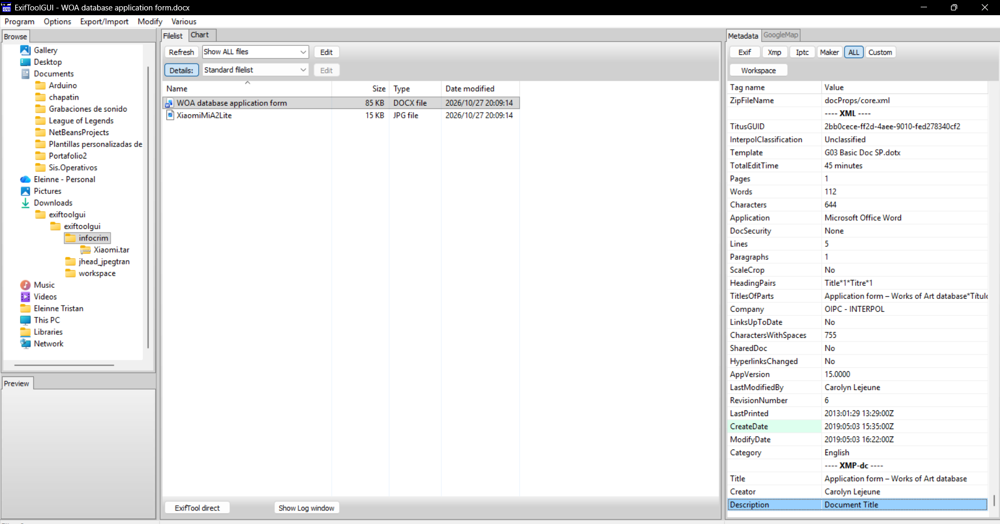
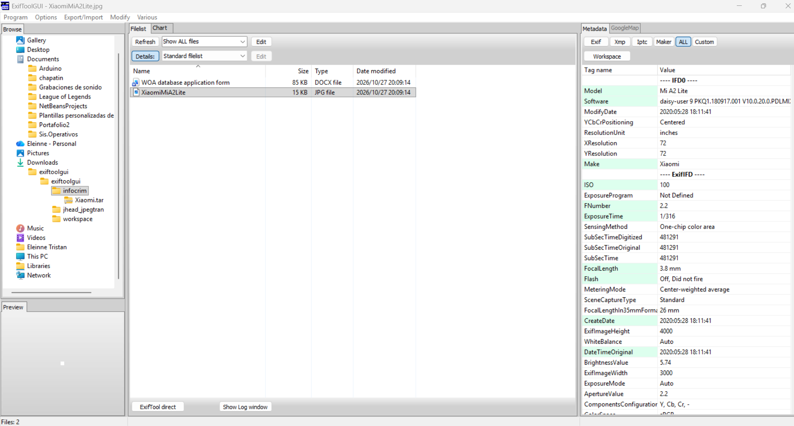
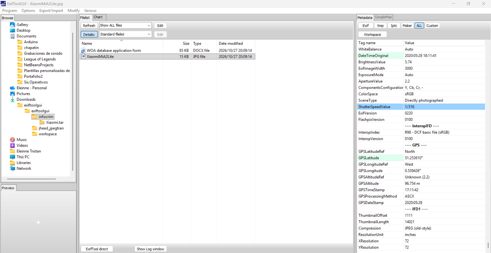
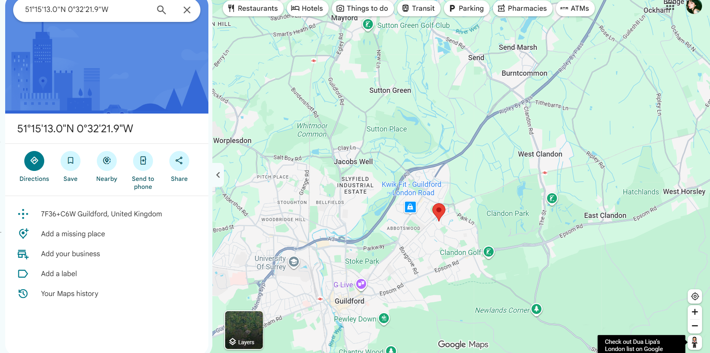
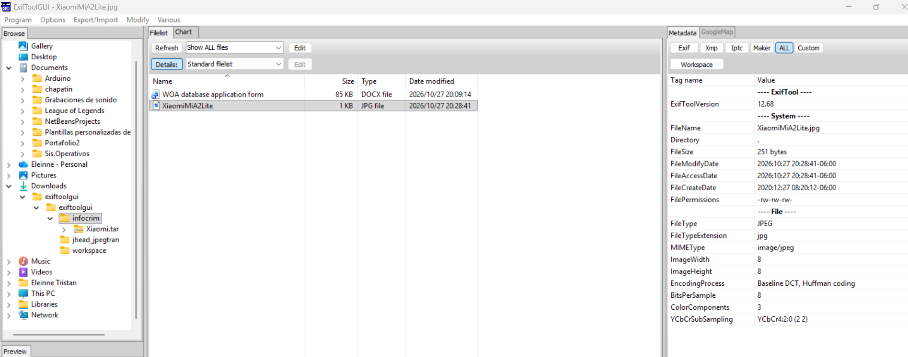
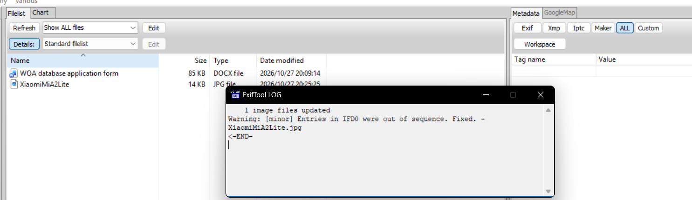

Actividad 15 — La fotografía como testigo: extracción de metadatos GPS
CNO IV — Programación WAP
Alumna: Tristán Rivera Magdalena Yesenia — 174702 | Grupo: T37A
Docente: Mtro. Servando López Contreras | Parcial: 3
Fecha: 27 de octubre de 2026
01 — Objetivo
El análisis forense de metadatos permite reconstruir el origen, autoría y contexto de un archivo digital sin alterar su contenido visible. En esta actividad se analizaron dos muestras —un documento ofimático de la OIPC-INTERPOL y una fotografía capturada con un smartphone Xiaomi— con el fin de extraer sus metadatos, demostrar cómo una imagen puede convertirse en testigo geográfico de un hecho mediante sus coordenadas GPS, y finalmente aplicar la higiene de metadatos eliminando toda la información incrustada.
02 — Herramienta utilizada
03 — Parte I · Documento WOA database application form.docx
| # | PREGUNTA | RESPUESTA |
|---|---|---|
| 1 | ¿Cómo categorizó el archivo INTERPOL? | Unclassified |
| 2 | ¿Qué template utilizó INTERPOL para elaborar el archivo? | G03 Basic Doc SP.dotx |
| 3 | ¿Cuál fue el tiempo total de edición del fichero? | 45 minutes |
| 4 | Compañía propietaria del fichero. | OIPC - INTERPOL |
| 5 | ¿Quién realizó la última modificación? | Carolyn Lejeune |
| 6 | Fecha de creación del fichero. | 2019:05:03 15:35:00Z |
| 7 | Creador del fichero. | Carolyn Lejeune |

04 — Parte II · Fotografía XiaomiMiA2Lite.jpg
| # | PREGUNTA | RESPUESTA |
|---|---|---|
| 1 | ¿Cuál fue el valor ISO utilizado? | ISO 100 |
| 2 | Longitud focal de la cámara. | 3.8 mm |
| 3 | ¿Se utilizó Flash para obtener la imagen? | No — Off, Did not fire |
| 4 | Fecha de creación del archivo. | 2020:05:28 18:11:41 |


05 — Pregunta 5 · Geolocalización GPS
A partir de las etiquetas GPSLatitude y GPSLongitude incrustadas en la fotografía, se convirtieron las coordenadas de grados-minutos-segundos (DMS) a decimal y se verificó el punto exacto donde fue tomada la imagen.

06 — Pregunta 6 · Eliminación de metadatos
Como medida de higiene digital, se eliminaron todos los metadatos de la muestra fotográfica. Tras la limpieza, la imagen ya no conserva etiquetas EXIF, de cámara ni de GPS: deja de ser rastreable geográficamente.


07 — Conclusión
// REFLEXIÓN TÉCNICA
Esta actividad demostró que una fotografía puede funcionar como testigo silencioso de un hecho: sus metadatos EXIF revelaron el dispositivo, los parámetros de captura, la fecha exacta y —lo más sensible— las coordenadas GPS que ubicaron la toma en Guildford, Surrey. En un contexto de informática forense, ese dato puede situar a una persona o a un objeto en un lugar y momento concretos.
El documento de INTERPOL, por su parte, conservaba su autoría, plantilla, compañía y clasificación, información que delata la trazabilidad interna de un archivo aparentemente anónimo.
La contraparte es la privacidad: eliminar los metadatos antes de publicar o compartir un archivo evita exponer la ubicación y la identidad. La misma herramienta que investiga es la que protege.